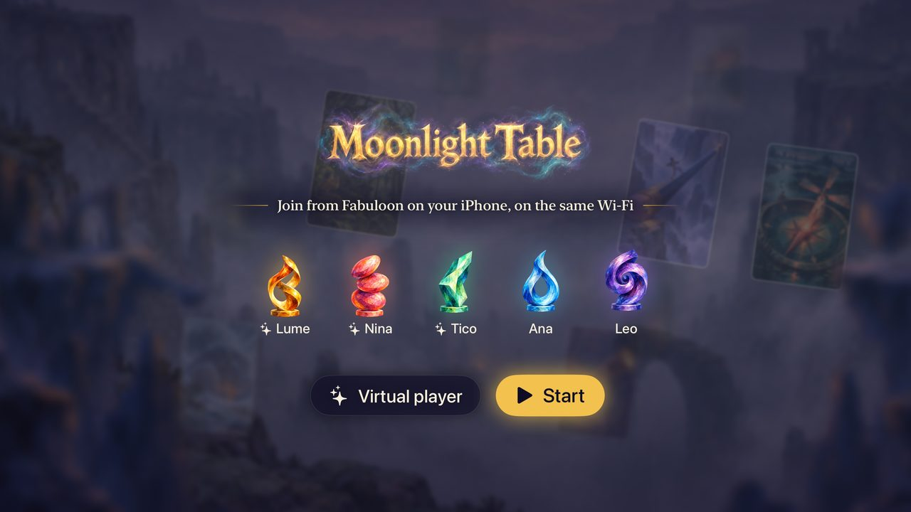
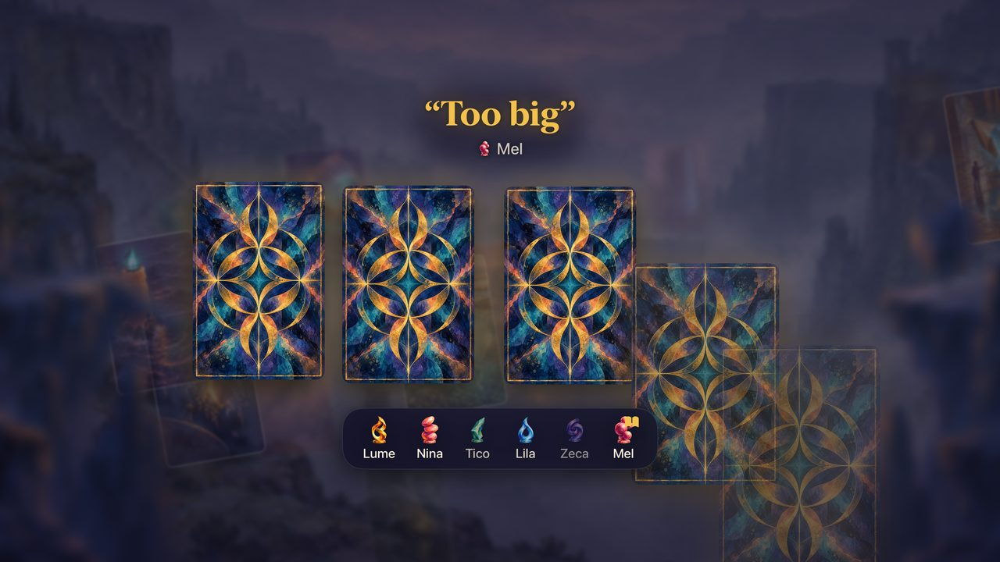
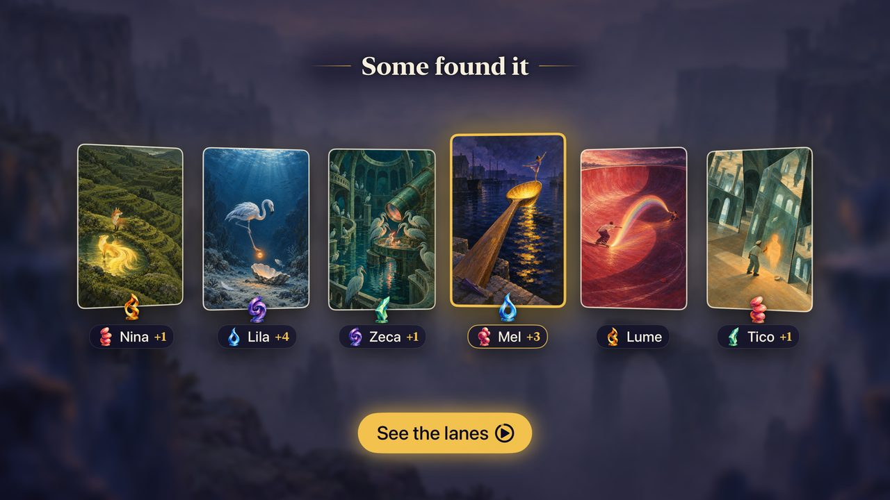
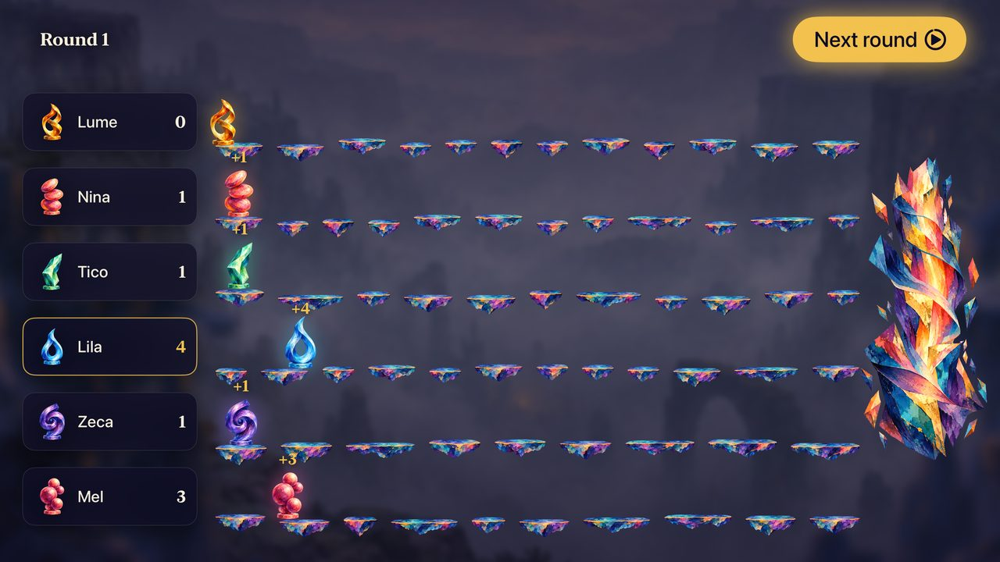

Game night, around the table
Gather around the table, pick a dreamlike card and give a clue — not too obvious, not too obscure. Can your friends find your card among the others?
A TV or iPad is the table
Cards, clues, votes and the race to 30 points come alive on the screen everyone looks at together: an Apple TV, an iPad or an AirPlay TV.
Your phone is your hand
Each player keeps their cards secret on their own iPhone or iPad. Join a table in one tap — no accounts, no internet, just the same Wi‑Fi.
Dreamlike cards
100 original illustrations made for Fabuloon. The Plus Pack adds 100 more to every game.
Play your way
4 to 8 players. Fill empty seats with virtual players — or play against them with just the Siri Remote.




How to play
Open Fabuloon on the Apple TV, or on an iPad and choose Be the table. Then choose Play with phones. Everyone opens Fabuloon on their iPhone or iPad, types a name and taps the table. Add virtual players if you like, and start. No Apple TV? Put the table on an AirPlay TV from your iPhone or iPad.
- The storyteller picks a card.
Each round, one player is the storyteller. They secretly choose a card from their hand and give a clue: a word, a sentence, a title, a sound — anything. - Everyone answers with a card.
The other players choose the card from their own hand that best matches the clue. - The cards are revealed.
All the cards are shuffled and shown on the table. Everyone (except the storyteller) votes for the card they think is the storyteller's. - Points.
If some players — but not all — find the storyteller's card, the storyteller and those players score 3. If everyone or no one finds it, the storyteller scores nothing and everyone else scores 2. Players also score 1 for each vote their own card received.
The first to reach 30 points wins. The secret is a clue that is clear, but not too clear.
Help & FAQ
Everything you need for a good game night.
What do I need to play?
A table, and an iPhone or iPad with Fabuloon for each player, all on the same Wi‑Fi network. The table can be an Apple TV, an iPad, or an AirPlay TV fed by an iPhone or iPad. No internet connection or account is needed. No phones around? Play against virtual players: with the Siri Remote on the Apple TV, or by touch on the iPad.
Can the table be on an iPad?
Yes. Open Fabuloon on the iPad and choose Be the table, then turn the iPad sideways. Everything the Apple TV does, the iPad does too: open a table for the phones, play against virtual players, how to play, and the Plus Pack.
Can I play on a TV without an Apple TV?
Yes, on any TV that works with AirPlay. On your iPhone or iPad, open Control Center, choose Screen Mirroring and pick the TV. Then open Fabuloon, type your name and tap Be the table. The TV shows the table, not your screen, so your device stays your hand and you play too. The table's buttons appear at the top of your hand.
The TV's picture and sound don't match.
AirPlay delays the sound by about two seconds, so Fabuloon makes the picture wait for it. The Sound test opens the first time a TV gets the table: play the beats and adjust − and + until the pulse on the TV lands on the beat you hear, then tap Done. Fabuloon remembers the setting for each TV. To run it again, tap Sound test on your device, on the table's home screen.
The TV lost the table.
The game goes on safely on your device. In Control Center, mirror your screen to the TV again and the table comes back.
How many players?
From 4 to 8. If you are fewer than 4, add virtual players at the table: they pick cards and vote on their own.
My iPhone can't find the table.
- Make sure the iPhone and the table are on the same Wi‑Fi network (guest networks, some hotels and some mesh systems keep devices from seeing each other).
- Fabuloon needs the Local Network permission to find the table: open Settings › Privacy & Security › Local Network and turn on Fabuloon.
- The table must be open: choose Play with phones on the table.
How do I give the clue?
With people only, just say it out loud. When there are virtual players at the table, the storyteller writes the clue on their phone, so the virtual players can “read” it too.
Someone's phone left the game.
A virtual player takes over their seat so the game can go on. When they open Fabuloon again and tap the table, they get their seat — and their cards — back.
What is the Plus Pack?
100 new cards that join the deck in every game. You buy it once on the device that is the table (More cards on the table's home screen), and every phone shows the new cards. Everyone needs the latest version of Fabuloon on their phone for the pack to be dealt.
How do I restore my purchase?
On the device that is the table, open More cards and choose Restore purchases. Purchases belong to your Apple Account and work on the Apple TV, iPhone and iPad.
How do I leave a table?
On the Apple TV, press Menu (or Back) on the Siri Remote. On the iPad that is the table, or on a phone, tap the × in the top corner. If your device put the table on a TV, that × closes the table for everyone.
Which languages?
English and Portuguese, following your device's language.
Something isn't working right.
Close Fabuloon on the table and on the phones and open it again. If the problem persists, write to us below with your device models and their system versions — we read every message.
Talk to us
Questions, ideas for new cards, or a bug that slipped away? We'd love to hear from you.
support@fabuloon.com